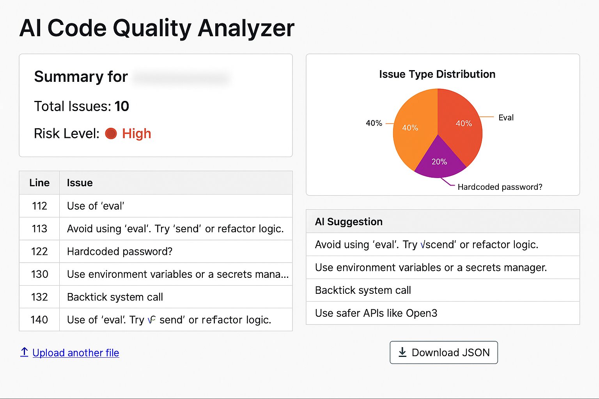
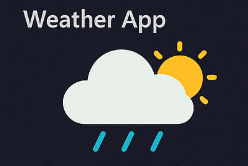
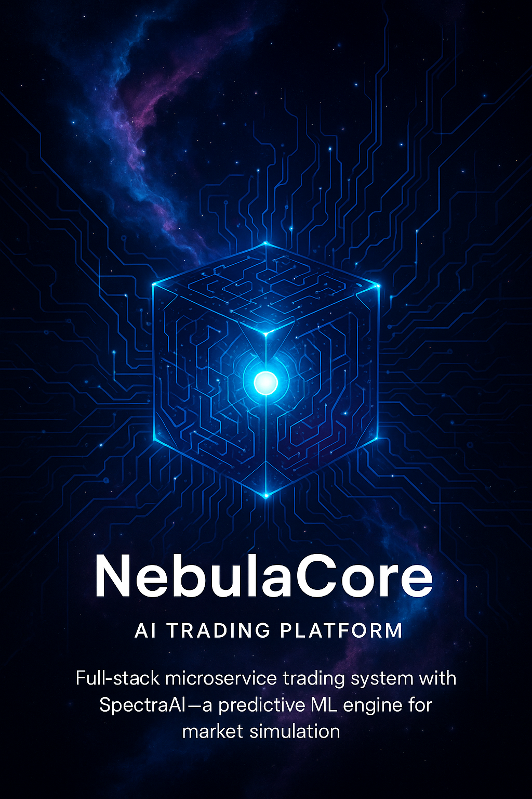

Generative AI Developer | Data Engineer | Cloud Developer | Cybersecurity Analyst | Full Stack Developer
Explore My Work ↓I am a Generative AI Engineer focused on building production-ready systems that combine data engineering, cloud automation, and responsible AI. My work centers on designing grounded AI pipelines, scalable workflows, and secure architectures that operate reliably in real-world environments.
Generative AI Developer (Jun 2025 – Jan 2026)
Client: Manulife
Information Officer (Mar 2025 – May 2025)
Data Engineer Intern (May 2023 – May 2024)
Software Developer (Nov 2022 – Apr 2023)
Master of Cybersecurity
Completed Coursework: Information Assurance, Privacy Law & Ethics, Security Technologies
Focus: Secure Systems, Digital Trust, and Cybersecurity in Public Infrastructure
Bachelor of Software Engineering (Honours)
Relevant Coursework: Cloud Computing, Cybersecurity, Distributed Systems, Data Engineering
Awards: President’s Honor List (2020), Dean’s List (2024)
Flutter app with real-time meal tracking and budget management using Firebase.
View Code
GPT-4 powered dashboard to detect risky code patterns in Python, Ruby, and JS files. Visualized with Chart.js.
View CodeReact Native + Firebase civic app with on-device ML for image tagging and violation type prediction.
View Code
Weather forecast platform using ARIMA and Monte Carlo simulations for 5-city prediction dashboards.
View Code
Full-stack microservice trading system with SpectraAI — a predictive ML engine for market simulation.
View CodeLet's connect and build the future together.